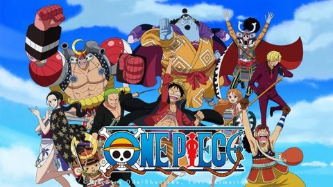

1) One Piece
Bercita-cita menjadi raja bajak laut, ia berbicara tentang petualangan seorang anak laki-laki bernama Monkey D. Luffy yang terinspirasi oleh Shanks dan menemukan "One Piece". Sekitar 22 tahun sebelum cerita dimulai, seorang bajak laut bernama
Gold D. Roger, atau lebih dikenal sebagai Raja Bajak Laut, dieksekusi di depan umum. Sesaat sebelum kematiannya, dia memberitahukan harta karunnya kepada seleruh dunia, One Piece. Ini dikatakan sebagai harta terbesar yang pernah ada.